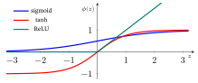
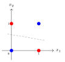
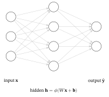
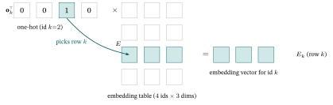
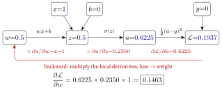
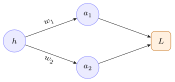
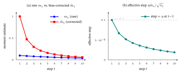
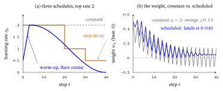
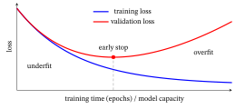

5 Neural Networks & Back-propagation
A neural network is, stripped of mystique, a stack of linear maps with a nonlinearity between them, trained by gradient descent (Calculus primer §5) using gradients computed by the chain rule (Calculus primer §3). That one sentence is the entire idea; this chapter unpacks it from zero, and the centrepiece is a single neuron, then a small two-layer network, whose forward pass (the numbers flowing from the input to the output) and one back-propagation step (back-prop for short; §5) we compute entirely by hand. It matters because this is how most of the learned models in this book are trained (§10), and it is the base on which the next chapter, Representation Learning & the Transformer, builds.
What this chapter assumes: from the three math primers, the dot product / matrix–vector product (Linear-Algebra primer; used from §1), the chain rule, partial derivatives, the Jacobian and gradient descent (Calculus primer §3, §4, §8, §5; used in §5), and the sigmoid, softmax and the normal distribution with its variance (Probability primer §1–§3; used in §2, §4 and §6); from Loss Functions & Regularizers, what a loss is (§1; used in §4), the bias–variance trade-off (§4; used in §7) and the regularizers (§5; used in §7). Not assumed: any earlier knowledge of neural networks; the neuron, the layer and back-propagation are built here from zero. This chapter is where the chain rule earns its keep.
1. A single neuron (from the linear model)
Whether Ann will like a film depends on several clues at once: how much action it has, how funny it is, how long it runs. You want one score out of all of them, with each clue allowed to count for more or for less. How do you build that score? This section builds it, and a whole network turns out to be many such scores wired together.
A neural network is a stack of linear maps (each one turns inputs into scores by weighted sums, as a matrix–vector product, Linear-Algebra primer §3) with a nonlinearity between them: §2 explains the nonlinearity, §3 the stacking, and §5–§6 the training. Its one repeated part is the neuron (also called a unit). Start with the simplest model: a weighted sum of inputs plus a constant, exactly the score from the Linear-Algebra primer’s dot product.
\[ z \;=\; w_1 x_1 + w_2 x_2 + \dots + w_n x_n + b \;=\; \mathbf{w}\cdot\mathbf{x} + b. \]
- \(\mathbf{x}\) — the inputs (features).
- \(\mathbf{w}\) — the weights (how much each input matters; learned).
- \(b\) — the bias (a constant offset, shifting the threshold; learned).
- \(z\) — the pre-activation (the raw score; for a classifier’s last layer it is called the logit, Probability primer §3).
A neuron then applies a function \(\phi\) (the activation function, §2) to that score: \(a = \phi(z)\). The result \(a\) (\(a\) for activation) is the neuron’s output, its post-activation value — the partner of the pre-activation \(z\). When §3 puts many neurons side by side, their outputs \(a\) are collected into one vector, written \(\mathbf{h}\).
Why “neuron,” “weights,” “bias.” The model is loosely inspired by a biological neuron that fires when its inputs exceed a threshold. The weights weight each incoming signal; the bias is the firing threshold moved to the other side of the equation. The single unit with a step activation (output \(1\) if \(z\ge 0\), else \(0\) — an on/off switch) is the historic perceptron (Rosenblatt, 1958) — perceive + -tron.
Worked example. Inputs \(\mathbf{x}=[1,2]\), weights \(\mathbf{w}=[0.5,-0.5]\), bias \(b=0\): \[ z = (0.5)(1)+(-0.5)(2)+0 = 0.5 - 1.0 = -0.5. \]
That single number is the neuron’s score; §2 squashes it into an output.
In one line: a neuron is a weighted sum plus a bias, \(z=\mathbf w\cdot\mathbf x+b\). Back to Ann: with ratings of \(1\) for action and \(2\) for funniness (invented for the example) and weights \(0.5\) and \(-0.5\), her score for the film is \(-0.5\), because funniness counts against it.
2. Activation functions — and why a nonlinearity is essential
Bob likes a film when it is a comedy or a thriller, but not when it mixes both. A score made only by adding up clues cannot say “one or the other, not both”. What has to be put between two sums so that a stack of them is more than one sum? This section answers that.
The activation function \(\phi\) takes the score \(z\) and produces the neuron’s output. The three you meet first:
| Name | Formula | Range | Note |
|---|---|---|---|
| Sigmoid | \(\sigma(z)=\dfrac{1}{1+e^{-z}}\) | \((0,1)\) | “probability-like”; from the Probability primer §3 |
| Tanh (hyperbolic tangent) | \(\tanh(z)=\dfrac{e^{z}-e^{-z}}{e^{z}+e^{-z}}\) | \((-1,1)\) | a sigmoid stretched to \((-1,1)\) and centered on \(0\): \(\tanh(z)=2\sigma(2z)-1\) |
| ReLU (rectified linear unit) | \(\max(0,z)\) | \([0,\infty)\) | the usual default hidden-layer activation since the early 2010s (a claim from practice, not tested here) — cheap, no vanishing slope for \(z>0\) |
Why “activation,” “tanh” and “ReLU.” Activation = how strongly the neuron “fires.” Tanh is short for hyperbolic tangent: it plays for the hyperbola the role the ordinary tangent function plays for the circle — hence the name (most calculators have a tanh key). ReLU = Rectified Linear Unit: “rectified” (as in a rectifier that clips negatives to zero) + “linear” (it is the identity for \(z>0\)).
Worked example. \(\text{ReLU}(-2)=0\) and \(\text{ReLU}(3)=3\). Applying sigmoid to §1’s score: \(\sigma(-0.5)=\dfrac{1}{1+e^{0.5}}=0.3775\). Applying tanh to the same score: \[ \tanh(-0.5)=\frac{e^{-0.5}-e^{0.5}}{e^{-0.5}+e^{0.5}}=\frac{0.6065-1.6487}{0.6065+1.6487}=\frac{-1.0422}{2.2552}=-0.4621 \]
— negative, because tanh keeps the sign of its input, where the sigmoid’s output is always positive. The table’s “stretched sigmoid” claim is one line of algebra: \(2\sigma(2z)-1=\dfrac{2}{1+e^{-2z}}-1=\dfrac{1-e^{-2z}}{1+e^{-2z}}\), and multiplying top and bottom by \(e^{z}\) gives exactly the tanh formula.

Why ReLU is the usual default. Sigmoid and tanh saturate — far from \(0\) their curves go flat, so the slope \(\to 0\) and gradients (§5: the loss’s slope per nudge of a weight) vanish, stalling the early layers of a deep net (many layers, §3): the sigmoid’s slope is \(0.25\) at \(z=0\), \(0.105\) at \(z=2\) and only \(0.018\) at \(z=4\).
With weights of size about \(1\) or less, ten layers each passing back at most \(0.25\) leave at most \(0.25^{10}\approx10^{-6}\) of the gradient. (With weights near \(4\) the factor per layer is \(0.25\times4=1\); §6 sets the starting weights with care.) ReLU’s slope is exactly \(1\) for \(z>0\), so the gradient flows back undiminished (the usual reason it largely replaced squashing activations: a claim from practice, not tested here). The flip side: a unit stuck at \(z<0\) gets zero gradient and can stay “dead”.
Two variants soften the dead unit by giving negatives a small non-zero output and slope. Leaky-ReLU (Maas et al., 2013) is \(\max(0.01z,\,z)\) (a slope of \(0.01\) is a common choice), so \(\text{Leaky-ReLU}(-2)=-0.02\) instead of \(0\). GELU (Gaussian error linear unit; Hendrycks & Gimpel, 2016) multiplies \(z\) by the probability that a standard bell-curve (Gaussian) variable — mean \(0\), variance \(1\) — lands below \(z\) (Probability primer §1–§2): a smooth ReLU look-alike. For \(z=-2\) that probability is \(0.02275\) (the bell’s thin left tail, read from a table of the standard bell curve or computed by software rather than worked out by hand), so \(\text{GELU}(-2)=-2\times0.02275=-0.0455\).
Why the nonlinearity matters — the crucial point. Put several neurons side by side and their weight vectors stack, one per row, into a matrix \(W\): that is a layer (§3 builds it properly). Now stack two linear layers — no activation — with weight matrices \(W^{(1)}\) and \(W^{(2)}\) (the \((1)\) and \((2)\) in parentheses are layer numbers, labels and not powers). You get \(W^{(2)}(W^{(1)}\mathbf{x}) = (W^{(2)} W^{(1)})\mathbf{x}\) — still just one linear map, because a product of matrices may be regrouped (Linear-Algebra primer §3: grouping does not matter, only order does). No amount of stacking adds power. A two-line check, with \(W^{(1)}=\begin{bmatrix}1&2\\0&1\end{bmatrix}\), \(W^{(2)}=\begin{bmatrix}1&0\\1&1\end{bmatrix}\) and \(\mathbf x=[1,1]\): \[ \underbrace{W^{(1)}\mathbf x=[3,\,1],\quad W^{(2)}[3,\,1]=[3,\,4]}_{\text{layer by layer}} \qquad\qquad \underbrace{W^{(2)}W^{(1)}=\begin{bmatrix}1&2\\1&3\end{bmatrix},\quad \begin{bmatrix}1&2\\1&3\end{bmatrix}\mathbf x=[3,\,4]}_{\text{one matrix}} \]
— the single matrix \(W^{(2)}W^{(1)}\) does both layers’ work. The nonlinearity \(\phi\) between layers is what lets a deep network bend space and represent functions a single line cannot — the classic example being XOR (exclusive-or: output \(1\) if and only if exactly one input is \(1\), i.e. the two inputs differ), which no single straight line can separate (panel (a) of the figure after the next example) but a 2-layer net can (two weight matrices, with one hidden layer of neurons between input and output; §3 builds one).
Worked example — a 2-layer net that computes XOR. Two hidden neurons (neither input nor output, §3; each is §1’s neuron with ReLU) and one output neuron with no activation; the hat in \(\hat y\) (“y-hat”) marks the network’s prediction: \[ h_1=\text{ReLU}(x_1+x_2),\qquad h_2=\text{ReLU}(x_1+x_2-1),\qquad \hat y=h_1-2h_2 . \]
| \(x_1\) | \(x_2\) | \(z_1=x_1+x_2\) | \(z_2=x_1+x_2-1\) | \(h_1\) | \(h_2\) | \(\hat y=h_1-2h_2\) | XOR |
|---|---|---|---|---|---|---|---|
| \(0\) | \(0\) | \(0\) | \(-1\) | \(0\) | \(0\) (clipped) | \(0\) | \(0\) |
| \(0\) | \(1\) | \(1\) | \(0\) | \(1\) | \(0\) | \(1\) | \(1\) |
| \(1\) | \(0\) | \(1\) | \(0\) | \(1\) | \(0\) | \(1\) | \(1\) |
| \(1\) | \(1\) | \(2\) | \(1\) | \(2\) | \(1\) | \(0\) | \(0\) |
Every row matches XOR. The whole trick is the one clipped value: at \((0,0)\) the ReLU turns \(z_2=-1\) into \(h_2=0\). Without the ReLU the same weights would give \(\hat y=z_1-2z_2=2-x_1-x_2\), i.e. \(2,1,1,0\) — one linear map, wrong at \((0,0)\). Seen from the hidden layer (panel (b) of the figure just below), the four inputs land on just three points, \((h_1,h_2)=(0,0)\), \((1,0)\) and \((2,1)\), and there a straight line does separate the classes: \(h_1-2h_2=0.5\), with both class-1 inputs (they share the point \((1,0)\)) on one side and both class-0 points on the other.

In one line: the activation’s bend is what lets stacked layers do more than one line can; without it, two layers collapse into one matrix, and with ReLU two hidden neurons solve XOR. Back to Bob: his rule is that XOR network, so a comedy only \((1,0)\) or a thriller only \((0,1)\) (the order is comedy, thriller) scores \(1\), while a film that mixes both \((1,1)\), or has neither \((0,0)\), scores \(0\).
3. The multi-layer perceptron (MLP)
To decide whether Cara will like a film, you may first want several smaller judgements (is it tense? is it slow?) and only then a verdict built from those. How do you wire many small scorers into one decision-maker?
Put many neurons side by side to form a layer, and stack layers front to back. A layer takes a vector in and puts a vector out — a matrix–vector product (Linear-Algebra primer §3) followed by an elementwise activation: \[ \mathbf z = W\mathbf{x} + \mathbf{b},\qquad \mathbf{h} = \phi(\mathbf z). \]
- \(\mathbf x\) — the input vector. Throughout this chapter a bracketed list such as \([1,2]\) is a vector, and whenever a matrix multiplies it (as in \(W\mathbf x\)) it stands as a column.
- \(W\) — the layer’s weight matrix: row \(i\) holds neuron \(i\)’s weights (its \(\mathbf w\) from §1), one column per input.
- \(\mathbf{b}\) — the layer’s bias vector (one bias per neuron).
- \(\mathbf z\) — the layer’s pre-activation vector: entry \(i\) is neuron \(i\)’s score \(z\) from §1.
- \(\phi\) — applied elementwise (to each entry on its own).
- \(\mathbf{h}\) — the layer’s output: the post-activation values \(a\) of its neurons (§1), collected into one vector. For every layer but the last it is a hidden representation, fed to the next layer; the last layer’s output is the network’s prediction.
Stack \(L\) such layers, each one’s output feeding the next: \(\mathbf{x}\to\mathbf{h}^{(1)}\to\dots\to\mathbf{h}^{(L)}=\hat{\mathbf{y}}\). The \((\ell)\) in parentheses is a layer number — a label, not a power — so \(W^{(\ell)}\), \(\mathbf b^{(\ell)}\), \(\mathbf z^{(\ell)}\) and \(\mathbf h^{(\ell)}\) belong to layer \(\ell\), while a plain subscript still picks one entry (\(h_2\) is the second entry of \(\mathbf h\)). Layer \(\ell\) computes \(\mathbf z^{(\ell)}=W^{(\ell)}\mathbf h^{(\ell-1)}+\mathbf b^{(\ell)}\) and \(\mathbf h^{(\ell)}=\phi(\mathbf z^{(\ell)})\), starting from \(\mathbf h^{(0)}=\mathbf x\) (the last layer often skips \(\phi\), or uses §4’s output head). The hat marks the network’s prediction \(\hat{\mathbf y}\), which §4 compares with the true target \(\mathbf y\) (plain \(\hat y\) and \(y\) when the output is a single number). (Here \(L\) counts layers; the loss — the single number that measures how badly the predictions miss their targets, Loss Functions & Regularizers §1 — will get the curly letter \(\mathcal L\) in §4.)
Why “MLP,” “hidden,” “feedforward,” “deep.” A multi-layer perceptron is several perceptron-style layers stacked. The middle layers are hidden (not directly observed — neither input nor output). Signal flows one way, input → output, so it is feedforward. Many layers = deep learning. The width is neurons-per-layer; the depth is the number of layers.

A tiny forward pass. Take a \(2\!\to\!2\!\to\!1\) network (2 inputs, 2 hidden neurons, 1 output): input \(\mathbf{x}=[1,2]\); a hidden layer (layer 1) with weight rows \([1,-1]\) and \([0,1]\), i.e. \(W^{(1)}=\begin{bmatrix}1&-1\\0&1\end{bmatrix}\), bias \(\mathbf{b}^{(1)}=[0,-1]\), and ReLU; then one output neuron (layer 2, no activation) with weights \(\mathbf{w}^{(2)}=[1,2]\) and bias \(b^{(2)}=0.5\). (A one-neuron layer’s weight matrix \(W^{(2)}\) is a single row, so we write it as §1’s weight vector \(\mathbf w^{(2)}\), and \(W^{(2)}\mathbf h^{(1)}\) as the dot product \(\mathbf w^{(2)}\cdot\mathbf h^{(1)}\); its bias vector is the single number \(b^{(2)}\).)
Three steps, one operation each: \[ \begin{gathered} W^{(1)}\mathbf{x}=[\,1\cdot1+(-1)\cdot2,\ \ 0\cdot1+1\cdot2\,]=[-1,\,2],\\[4pt] \mathbf z^{(1)}=W^{(1)}\mathbf{x}+\mathbf{b}^{(1)}=[-1+0,\ \ 2+(-1)]=[-1,\,1],\qquad \mathbf{h}^{(1)}=\text{ReLU}(\mathbf z^{(1)})=[0,\,1],\\[4pt] \hat y=\mathbf{w}^{(2)}\!\cdot\!\mathbf{h}^{(1)}+b^{(2)}=1\cdot0+2\cdot1+0.5=\boxed{2.5}. \end{gathered} \]
The ReLU clipped the \(-1\) to \(0\) — that bend is the nonlinearity at work. Each layer is just a matrix–vector product plus an elementwise activation; §5 then traces the gradient back through this very network, number by number.
Embedding layers — the input side for discrete data
An MLP eats a vector, but a recommender’s raw input is a discrete id (user #4072, movie #88) — not a number you can multiply. The fix is an embedding layer: keep a big learnable lookup table \(E\) (one row per id) and encode id \(k\) as its row \(E_k\). Formally that is a matrix–vector product with a one-hot input: the one-hot vector \(\mathbf o_k\) (\(\mathbf o\) for one-hot: a column of \(0\)s with a single \(1\) in slot \(k\) — mathematicians call it the \(k\)-th standard basis vector) picks out the matching row, \(E_k=\mathbf o_k^\top E\) — the one-hot on the left here, since we want a row, not the \(W\mathbf x\) column convention above (the same vector is \(E^\top\mathbf o_k\) if you prefer to keep the matrix on the left).
Either way it is a plain linear map, so its rows train by the same back-propagation (back-prop for short, §5) as any other weights. This is the bridge to the recommender chapters: the user/item embeddings of matrix factorization (the classic recommender model, Traditional Recommender Systems) and of LightGCN (a graph-based recommender model, From Graphs to LightGCN) are these lookup rows (for LightGCN, its starting embeddings, which it then mixes over the graph) — learned vectors, scored by a dot product (§1).

nn.Embedding: it stores the table and returns the row for the given id.
By the numbers. Take a \(4\times3\) table (4 ids, 3-dim): \(E=\begin{bmatrix}0.9&0.1&0.0\\ 0.2&0.8&0.1\\ 0.5&-0.2&0.1\\ -0.3&0.4&0.7\end{bmatrix}\). Looking up id \(k{=}2\) (the third row, 0-indexed) returns \(E_2=[0.5,-0.2,0.1]\) — no arithmetic, just a row read; the one-hot product confirms it, \(\mathbf o_2^{\top}E=0\cdot\text{row}_0+0\cdot\text{row}_1+1\cdot\text{row}_2+0\cdot\text{row}_3=[0.5,-0.2,0.1]\). The quiet consequence is in back-prop: that same one-hot zeroes the gradient for every other row. The reason is visible in the sum just written: every row \(j\ne k\) enters the output multiplied by \(0\), so nudging it cannot change the output — and its gradient (§5 makes the word precise: how much the loss changes per nudge) is \(0\). So, with plain stochastic gradient descent (SGD, §6) and no penalty on the table, an id’s embedding updates only on training examples that use it.
Rows absent from the batch (the examples used in one update) can still move: weight decay (§7, a penalty that shrinks every weight a little at each step), momentum (§6, a running average of past gradients) and Adam (§6, a per-weight adaptive step size) each change a parameter at a step where its own gradient is zero; for example, weight decay multiplies an absent row by \(1-0.1\cdot2\cdot0.01=0.998\) at \(\lambda=0.01\), \(\eta=0.1\).
A user seen once barely moves; an id never seen gets no gradient at all — precisely the cold-start gap (a new user or item with no history) that From Graphs to LightGCN §14 describes and Large Language Models and Recommendation returns to (that chapter explains how a text encoder can give a new item a usable vector by construction, not tested there, and states what it does not fix). Two words for it: a model that can only represent the ids it saw in training is called transductive (the word From Graphs to LightGCN §14 uses for LightGCN); one that can give a brand-new id a usable vector computed from its content — its text, its attributes — is called inductive.
A tiny case. The table above has ids \(0\) to \(3\). A new film arrives as id \(4\): \(E\) has no row \(4\) and no gradient ever trained one, so a model that only reads \(E\) has nothing to score. An inductive model reads the film’s content instead. Say its genre flags are \(\mathbf c=[1,0]\) (comedy yes, thriller no), taken as a row so that \(\mathbf c\,G\) is a row too, and a learned \(2\times3\) matrix \(G\), trained on the films that were seen, has rows \([0.4,0.1,0.0]\) and \([0.0,0.5,0.2]\); then \(\mathbf c\,G=[0.4,\,0.1,\,0.0]\) is a usable vector for a film the training never saw.
In one line: an embedding layer is a lookup table whose rows train by back-prop only when their id appears, which is why a never-seen id has no usable vector. Back to Cara: in the tiny network her two smaller judgements are the hidden units, which read \([0,1]\) for \(\mathbf x=[1,2]\) (say the first is “tense”, off, and the second “slow”, on), and the verdict built from them is \(2.5\).
4. The forward pass and the loss
To improve a model’s guesses you need two things: a way to get a guess for Ann out of the model, and a way to say how wrong that guess is against what she really rated. This section builds both.
The forward pass runs an input through the network to a prediction \(\hat{y}\), then scores it against the target \(y\) with a loss \(\mathcal L\) (Loss Functions & Regularizers; the curly \(\mathcal L\) is this book’s letter for a loss): regression (predicting a number) → mean squared error (MSE), classification (predicting a class) → binary cross-entropy (BCE) / cross-entropy. Training = adjust all the weights and biases to make that loss small over the data.
For multi-class output the last layer is a softmax (Probability primer §3; Loss Functions & Regularizers §2.2): it turns the \(K\) raw scores into a probability distribution over the classes, paired with cross-entropy. So for classification the output head (the network’s last layer) is a sigmoid (one probability) or a softmax (\(K\) probabilities), and for regression it is linear, with no activation, as in §3’s tiny network; everything before it is the linear-maps-plus-nonlinearity stack.
Worked example — a softmax + cross-entropy head. Three classes, with raw scores (logits) \(\mathbf z=[2,1,0]\) — the output layer’s pre-activations, bold because they form a vector — and true class \(0\). Softmax exponentiates and normalizes: \(e^{2},e^{1},e^{0}=7.39,2.72,1.00\) (sum \(11.11\)), giving probabilities \(\hat{\mathbf p}=[0.665,\,0.245,\,0.090]\). Cross-entropy then reads off the negative log-probability of the true class: \(\mathcal L=-\ln\hat p_0=-\ln 0.665=0.41\). Decoded: the loss is small only when the model concentrates mass on the right class (\(\hat p_0\to 1\Rightarrow\mathcal L\to 0\)) and grows without bound as \(\hat p_0\to 0\): \(\hat p_0=0.98,\,0.5,\,0.01\) give \(\mathcal L=0.02,\,0.69,\,4.6\) — exactly the pressure that trains a classifier.
Why “forward pass.” You pass the data forward through the layers, input to output. (Back-propagation, §5, then passes information backward.)
So a network is a long composition \(\;\mathbf{x}\to\text{layer }1\to\dots\to\text{layer }L\to\mathcal L\), i.e. a chain of functions ending at the loss — which is exactly the setting the chain rule (Calculus primer §3) was built for.
In one line: the forward pass turns an input into a prediction and a loss, and the loss is the end of the chain that §5 differentiates. Back to Ann: if she really rated the film class \(0\) (say “liked”), the guess \([0.665,0.245,0.090]\) costs \(0.41\), and a guess of \(0.98\) on that class would cost \(0.02\).
5. Back-propagation = the chain rule (the centrepiece)
A network’s guess for Ann is off, and the network has millions of dials, and each dial is one weight. Which weight should you turn, and in which direction, to make the guess less wrong? Testing them one at a time would take far too long. This section shows how to get all the answers at once.
To train with gradient descent (Calculus primer §5) we need \(\dfrac{\partial \mathcal L}{\partial w}\) for every weight — a partial derivative, written with a curly \(\partial\): the slope of the loss along \(w\) alone, every other weight held fixed (Calculus primer §4). In words: “if I nudge this weight, how does the loss change?” Back-propagation computes all of them efficiently by applying the chain rule (Calculus primer §3) backward through the chain, reusing each layer’s result.
(The alternative, nudging each weight in turn and re-running the forward pass, costs one forward pass per weight: \(9\) for §3’s tiny network, whose weights and biases number \(4+2+2+1\), and millions for a real one. Back-prop gets all the gradients for a cost of the same order as one forward pass: each layer’s backward step is two matrix products (rules 2 and 3 below) the size of its one forward product, so about twice the forward cost, a count by operations that this chapter does not time.)
Why “back-propagation.” The error signal is propagated backward from the loss to each weight — the reverse of the forward pass. It is not a new kind of math: it is the chain rule (\(\frac{\partial\mathcal L}{\partial w}=\frac{\partial\mathcal L}{\partial a}\cdot\frac{\partial a}{\partial z}\cdot\frac{\partial z}{\partial w}\)), bookkept layer by layer.
Worked example — one neuron, trained one step, entirely by hand. A fresh, single-input neuron (so the algebra stays one-dimensional — not §1’s two-input one). Network: \[ x \xrightarrow{\;z=wx+b\;} z \xrightarrow{\;a=\sigma(z)\;} a \xrightarrow{\;\mathcal L=\tfrac12(a-y)^2\;} \mathcal L, \qquad x=1,\; w=0.5,\; b=0,\; y=0. \]
We use the squared error here only because its derivative is the simplest, \(a-y\); the \(\tfrac12\) is there so that the \(2\) from differentiating the square cancels. (With a sigmoid output you would normally use BCE, §4, \(\mathcal L=-y\ln a-(1-y)\ln(1-a)\), whose slope is \(\partial\mathcal L/\partial a=(a-y)/\bigl(a(1-a)\bigr)\); the sigmoid’s \(\partial a/\partial z=a(1-a)\) cancels the denominator, so \(\partial\mathcal L/\partial z\) is also exactly \(a-y\).)
Forward pass. \[ z = (0.5)(1)+0 = 0.5,\quad a=\sigma(0.5)=0.62246\approx0.6225,\quad \mathcal L=\tfrac12(0.62246-0)^2 = 0.1937. \]
Backward pass — for each link, identify the local derivative, then accumulate it into the running gradient by multiplying with what came before:
| link | local derivative | running gradient so far |
|---|---|---|
| loss vs. output | \(\partial\mathcal L/\partial a=a-y=0.6225\) | \(\partial\mathcal L/\partial a=0.6225\) |
| output vs. score | \(\partial a/\partial z=\sigma(z)(1{-}\sigma(z))=0.2350\) | \(\partial\mathcal L/\partial z=0.6225\times0.2350=0.1463\) |
| score vs. weight | \(\partial z/\partial w=x=1\) | \(\partial\mathcal L/\partial w=0.1463\times1=0.1463\) |
The local derivative at each link is just that link’s own slope (how \(a\) moves when \(z\) is nudged, for instance). The running gradient multiplies those local slopes together as the chain rule carries the error back toward the weight — so reading down the running-gradient column, row 1 is \(\partial \mathcal L/\partial a\), row 2 is \(\partial \mathcal L/\partial z\), and row 3 — the answer — is \(\partial \mathcal L/\partial w\).
Where each local derivative comes from: \(\frac{\partial \mathcal L}{\partial a}=a-y\) is the derivative of \(\mathcal L=\tfrac12(a-y)^2\); \(\frac{\partial a}{\partial z}=\sigma(z)(1-\sigma(z))\) is the sigmoid derivative — one chain-rule step on \(\sigma=(1+e^{-z})^{-1}\) gives \(\sigma'=\sigma(1-\sigma)\) (the full derivation is in Calculus primer §3), so here \(0.6225\,(1-0.6225)=0.2350\); \(\frac{\partial z}{\partial w}=x\) because \(z=wx+b\) is linear in \(w\). Chain them: \[ \frac{\partial \mathcal L}{\partial w}=\frac{\partial \mathcal L}{\partial a}\cdot\frac{\partial a}{\partial z}\cdot\frac{\partial z}{\partial w} = 0.6225\times0.2350\times1 = \boxed{0.1463}, \] and since \(\frac{\partial z}{\partial b}=1\), also \(\frac{\partial \mathcal L}{\partial b}=0.6225\times0.2350=0.1463\) (it equals \(\partial \mathcal L/\partial w\) here only because \(x=1\) makes \(\partial z/\partial w=\partial z/\partial b\)).
One gradient-descent step (Calculus primer §5), learning rate \(\eta=0.1\), for both parameters: \[ w \leftarrow w - \eta\frac{\partial \mathcal L}{\partial w} = 0.5 - 0.1(0.1463) = 0.4854,\qquad b \leftarrow b - \eta\frac{\partial \mathcal L}{\partial b} = 0 - 0.1(0.1463) = -0.0146. \]

Did the step help? Rerun the forward pass with the new values: \(z=0.4854(1)+(-0.0146)=0.4708\), \(a=\sigma(0.4708)=0.6156\), and \(\mathcal L=\tfrac12(0.6156)^2=0.1895\) — below the \(0.1937\) we started from. Both parameters moved down, which lowers the score \(z\), pushes \(a\) toward the target \(y=0\), and shrinks the loss — exactly what we want. That is the whole training algorithm for one neuron: forward, backward, update, repeat.
The same shortcut at a softmax head. For §4’s softmax and cross-entropy example (\(\mathbf z=[2,1,0]\), true class \(0\)), the gradient of the loss at the three scores is again prediction minus target, \(\partial\mathcal L/\partial\mathbf z=\hat{\mathbf p}-\mathbf y=[0.665,0.245,0.090]-[1,0,0]=[-0.335,\ 0.245,\ 0.090]\), where \(\mathbf y\) is the one-hot target. A nudge checks it: raising \(z_0\) by \(0.01\) lowers the loss from \(0.4076\) to \(0.4043\), a slope of about \(-0.33\). The gradient is negative on the true class (raise its score) and positive on the rest (lower them).
A real network is more than a single chain: one unit’s output fans out to many next-layer units, so there are several paths from it to the loss. The chain rule then sums over the paths. Concretely, if a hidden unit’s output \(h\) (one entry \(h_j\) of its layer’s vector \(\mathbf h\), written without its index \(j\) for now) feeds two next-layer pre-activations, \(z_1=v_1h\) and \(z_2=v_2h\) (through weights \(v_1,v_2\)), then \[ \frac{\partial \mathcal L}{\partial h}=\frac{\partial \mathcal L}{\partial z_1}\,v_1+\frac{\partial \mathcal L}{\partial z_2}\,v_2 \] — each term is one path’s chain (\(\partial\mathcal L/\partial z_i\) times the local derivative \(\partial z_i/\partial h=v_i\)), and the two paths’ contributions add (Calculus primer §3’s sum-over-paths: “gradients add where paths meet”).
From that sum to “Jacobian, multiply right-to-left.” That two-term sum is exactly a matrix–vector product. Stack the upstream gradients — the ones already computed for the layer above, closer to the loss — into \(\mathbf g_z=[\,\partial \mathcal L/\partial z_1,\ \partial \mathcal L/\partial z_2\,]\), and the weights out of \(h\) into \(\mathbf{v}=[v_1,\,v_2]\) (both columns, by §3’s convention). The Jacobian of a vector function \(f:\mathbb{R}^n\!\to\!\mathbb{R}^m\) (\(n\) numbers in, \(m\) out) is the \(m{\times}n\) matrix of all its partial derivatives \([\partial f_i/\partial x_j]\) — row \(i\) for output \(i\), column \(j\) for input \(j\) (Calculus primer §8). For a linear layer \(\mathbf z=W\mathbf h\) it is \(W\) itself, because \(\partial z_i/\partial h_j=W_{ij}\). Here one input \(h\) feeds two outputs, so the Jacobian is the \(2\times1\) column \(\mathbf v\) (with \(\mathbf v=[0.5,-1]\), nudging \(h\) by \(0.1\) moves \(z_1\) by \(0.05\) and \(z_2\) by \(-0.1\): each entry says how fast its output moves per unit of \(h\)), and
\[ \frac{\partial \mathcal L}{\partial h}\;=\;v_1\frac{\partial \mathcal L}{\partial z_1}+v_2\frac{\partial \mathcal L}{\partial z_2}\;=\;\mathbf{v}^\top\mathbf g_z . \]
So one back-prop step through a layer’s weights is multiply the upstream gradient vector by the layer’s Jacobian, transposed — \(W^\top\), because row \(j\) of \(W^\top\) gathers every weight leaving unit \(h_j\), so its product with the upstream vector is exactly \(h_j\)’s fan-out sum — and a whole network is just doing this layer after layer, starting from the loss and moving right-to-left (loss \(\to\) last layer \(\to\dots\to\) first layer). “Sum over paths” and “multiply Jacobians right-to-left” are the same operation, scalar form vs. matrix form.
One more factor enters at every hidden layer: its activation. Since \(\mathbf h=\phi(\mathbf z)\) entry by entry, stepping back from \(\mathbf h\) to \(\mathbf z\) multiplies each entry by its own activation slope, \(\phi'(z_i)\) — exactly as \(\sigma'(z)=0.2350\) entered the one-neuron chain. Writing \(\partial\mathcal L/\partial\mathbf z\) for the vector of the partials \(\partial\mathcal L/\partial z_i\) (the \(\mathbf g_z\) above; likewise for \(\mathbf h\), or for a whole weight matrix \(W\), entry by entry), the whole backward pass is three rules for each layer \(\ell\) (§3’s \(\mathbf z^{(\ell)}=W^{(\ell)}\mathbf h^{(\ell-1)}+\mathbf b^{(\ell)}\), \(\mathbf h^{(\ell)}=\phi(\mathbf z^{(\ell)})\)), applied from the last layer back to the first (the worked example after the figure below gives each rule a number):
- Through the activation: \(\partial\mathcal L/\partial z^{(\ell)}_i=\phi'(z^{(\ell)}_i)\cdot\partial\mathcal L/\partial h^{(\ell)}_i\) for every entry \(i\).
- The layer’s own parameters: \(\partial\mathcal L/\partial W^{(\ell)}_{ij}=\partial\mathcal L/\partial z^{(\ell)}_i\cdot h^{(\ell-1)}_j\) — the upstream gradient at the neuron the weight feeds, times the input the weight multiplies (the one-neuron example’s \(\partial z/\partial w=x\) again) — and \(\partial\mathcal L/\partial b^{(\ell)}_i=\partial\mathcal L/\partial z^{(\ell)}_i\).
- Back to the layer below: \(\partial\mathcal L/\partial\mathbf h^{(\ell-1)}=W^{(\ell)\top}\,\partial\mathcal L/\partial\mathbf z^{(\ell)}\) — the fan-out sum, for every unit at once.

Worked example — back-propagation through §3’s two-layer network, and one update. Take §3’s \(2\!\to\!2\!\to\!1\) network exactly as it was — \(\mathbf x=[1,2]\), \(\mathbf z^{(1)}=[-1,1]\), \(\mathbf h^{(1)}=[0,1]\), \(\hat y=2.5\) — give it the target \(y=2\), and use the same squared-error loss, \(\mathcal L=\tfrac12(\hat y-y)^2=\tfrac12(0.5)^2=0.125\). Walk backward, right to left:
Loss vs. output. \(\partial\mathcal L/\partial\hat y=\hat y-y=2.5-2=0.5\). The output neuron has no activation, so rule 1 has nothing to do there: \(0.5\) is also the gradient at its pre-activation.
The output layer’s own parameters (rule 2). Since \(\hat y=\mathbf w^{(2)}\cdot\mathbf h^{(1)}+b^{(2)}\), each output weight’s local derivative is the hidden value it multiplies: \(\partial\mathcal L/\partial\mathbf w^{(2)}=0.5\,\mathbf h^{(1)}=0.5\,[0,1]=[0,\,0.5]\), and \(\partial\mathcal L/\partial b^{(2)}=0.5\). (The first output weight gets nothing: it multiplied a \(0\).)
Back into the hidden layer (rule 3). Each hidden unit reaches \(\hat y\) through its own output weight, so \(\partial\mathcal L/\partial\mathbf h^{(1)}=0.5\,\mathbf w^{(2)}=0.5\,[1,2]=[0.5,\,1.0]\) — the upstream gradient that arrives at layer 1.
Through the ReLU — the activation factor re-enters (rule 1). Where the one-neuron chain had \(\sigma'(z)=0.2350\), this chain has ReLU’s slope: \(1\) where \(z>0\), \(0\) where \(z<0\). At \(\mathbf z^{(1)}=[-1,1]\) the slopes are \([0,1]\), so \(\partial\mathcal L/\partial\mathbf z^{(1)}=[0\times0.5,\ 1\times1.0]=[0,\,1.0]\).
The hidden layer’s own parameters (rule 2 again), with inputs \(x_1=1\), \(x_2=2\) — entry \((i,j)\) is \(\partial\mathcal L/\partial z^{(1)}_i\cdot x_j\):
\[ \frac{\partial\mathcal L}{\partial W^{(1)}}=\begin{bmatrix}0\cdot1&0\cdot2\\ 1.0\cdot1&1.0\cdot2\end{bmatrix}=\begin{bmatrix}0&0\\ 1&2\end{bmatrix}, \qquad \frac{\partial\mathcal L}{\partial\mathbf b^{(1)}}=[0,\,1]. \]
The first hidden unit was clipped by the ReLU (its \(z^{(1)}_1=-1\)), so its whole weight row and its bias get zero gradient — this example’s picture of §2’s “dead” unit: while its score stays negative, nothing flows back to it.
The fan-out check. If the network had another layer below, rule 3 would carry the gradient on to \(\mathbf x\) — and each input feeds both hidden units, so this is exactly the sum over paths. Path by path: \(x_1\) reaches \(z^{(1)}_1\) and \(z^{(1)}_2\) through weights \(1\) and \(0\), so \(\partial\mathcal L/\partial x_1=1(0)+0(1.0)=0\); \(x_2\) uses weights \(-1\) and \(1\), so \(\partial\mathcal L/\partial x_2=-1(0)+1(1.0)=1\). In one go, \(W^{(1)\top}\,\partial\mathcal L/\partial\mathbf z^{(1)}=\begin{bmatrix}1&0\\-1&1\end{bmatrix}[0,\,1]=[0,\,1]\) — the same numbers, scalar form and matrix form.
One update. With learning rate \(\eta=0.01\), every parameter moves by \(-0.01\) times its gradient, so only those with a non-zero gradient change: \(W^{(1)}\)’s second row becomes \([0,1]-0.01[1,2]=[-0.01,\,0.98]\), \(b^{(1)}_2=-1-0.01(1)=-1.01\), \(\mathbf w^{(2)}=[1,2]-0.01[0,0.5]=[1,\,1.995]\) and \(b^{(2)}=0.5-0.01(0.5)=0.495\). Forward again: \(z^{(1)}_2=(-0.01)(1)+(0.98)(2)-1.01=0.94\) (unit 1 is still clipped, \(z^{(1)}_1=-1\)), so \(\mathbf h^{(1)}=[0,\,0.94]\) and \(\hat y=1(0)+1.995(0.94)+0.495=2.3703\); the loss is \(\tfrac12(0.3703)^2=0.0686\), down from \(0.125\). Why a smaller \(\eta\) than the one neuron’s \(0.1\)?
The reason: this output reacts to its weights far more strongly — the input \(x_2=2\) and the weight \(w^{(2)}_2=2\) multiply into the gradients — and with \(\eta=0.1\) the step overshoots: \(\hat y\) would drop from \(2.5\) past the target to \(1.23\), and the loss would rise to \(0.296\). Choosing the learning rate is part of the job (Calculus primer §5). Every network trains exactly this way, only with more layers and more units: forward, backward (rules 1–3, right to left), update, repeat.
Run that loop over the whole dataset, a small batch of examples at a time, and it has a name: stochastic gradient descent (SGD). That is what §6 builds. For longer treatments of back-propagation, see Nielsen (2015, chapter 2), Goodfellow et al. (2016, §6.5), Deisenroth et al. (2020, §5.6) and the MIT 6.390 lecture notes on neural networks; the method was popularized by Rumelhart et al. (1986).
In code you do not write these backward steps by hand. A deep-learning library such as PyTorch records each operation of the forward pass and applies the chain rule to the record: this is automatic differentiation (autograd). One training step is then three calls: run the forward pass to get the loss, call loss.backward() to fill in every weight’s gradient, and call the optimizer’s step() (§6) to move the weights.
In one line: back-propagation is the chain rule run from the loss to every weight: multiply local slopes along each path, add where paths meet, then step against the gradient. Back to Ann’s guess: the one neuron’s weight goes from \(0.5\) to \(0.4854\) and its loss from \(0.1937\) to \(0.1895\), and for Cara’s network of §3 all \(9\) gradients come from one backward sweep.
6. The training loop: SGD and mini-batches, Adam, initialization, and learning-rate schedules
You can already tell which way to turn each dial for one film. But Ann has rated far too many films to check them all before every turn, and a turn that is too big overshoots. How often do you turn, how big a turn, and from where do you start? This section answers all three.
Training repeats forward + backward + update over the whole dataset, again and again; one full pass through the data is an epoch. The standard loop is called SGD (defined just below), and it looks like this:
repeat (each epoch):
for each mini-batch of examples:
forward pass -> predictions, loss
back-prop -> gradient of the loss for every weight
update -> w <- w - eta * gradientwhere eta is the learning rate \(\eta\) (the Greek letter eta) and the update is §5’s gradient-descent step (Calculus primer §5). A mini-batch’s loss is the average of its examples’ losses, so its gradient is the average of their gradients. For §5’s neuron at \(w=0.5\) with two examples, \((x=1,y=0)\) and \((x=1,y=1)\), the gradients are \(0.1463\) and \(-0.0887\), so the batch gradient is \((0.1463-0.0887)/2=0.0288\) and one step at \(\eta=0.1\) gives \(w=0.5-0.1(0.0288)=0.4971\).
Why the names. SGD = Stochastic Gradient Descent: “stochastic” because each step uses a random subset (a mini-batch) instead of the whole dataset, so the gradient is a noisy estimate — far cheaper and, in practice, said to help escape bad spots (a claim from practice that this chapter does not test). An epoch is one full sweep through the data (Greek epokhē, “a fixed point in time”). The batch size is how many examples per step; the learning rate \(\eta\) is the step size.
For example, 1,000 examples with batch size \(100\) make \(10\) updates per epoch, so \(5\) epochs are \(50\) updates. At batch size \(1\), \(100\) and \(1{,}000\) the same \(1{,}000\) examples make \(1{,}000\), \(10\) and \(1\) updates per epoch, each from the average gradient of \(1\), \(100\) or \(1{,}000\) examples: a small batch gives many noisy steps, a large one few smooth steps.
Beyond vanilla SGD — momentum and Adam. Plain SGD steps by \(\eta\) times the current gradient, every time; two upgrades are what you actually reach for. In both, \(t\) counts the update steps and \(g_t\) is the gradient \(\partial\mathcal L/\partial w\) at step \(t\). On a first reading keep three plain ideas: momentum smooths the steps and speeds them up along a steady slope, Adam gives every weight its own step size, and a schedule shrinks the step as training goes on. The formulas and tables below only show how, with numbers you can check.
- Momentum (Polyak, 1964) keeps a running velocity \(u_t\) — a decaying sum of past gradients: each step shrinks the old velocity by a factor \(\beta\) (typically \(0.9\)), adds the new gradient, and steps along the result: \[ u_t=\beta\,u_{t-1}+g_t,\qquad w\leftarrow w-\eta\,u_t . \] With a steady gradient — say §5’s \(g_1=g_2=0.1463\), starting from \(u_0=0\) — we get \(u_1=0.1463\), then \(u_2=0.9(0.1463)+0.1463=0.2780\): the step almost doubles while the slope stays consistent. With a gradient that never changes, the velocity settles at \(g/(1-\beta)\): \(2g\) for \(\beta=0.5\), \(10g\) for \(\beta=0.9\) and \(100g\) for \(\beta=0.99\). So momentum accelerates down a consistent slope, like a ball gaining speed, and \(\beta\) sets how long the speed-up can grow.
- Adam (Adaptive Moment estimation; Kingma & Ba, 2015) keeps running averages of both the gradient and its square, giving each parameter its own adaptive step size. In practice it is the optimizer many deep nets reach for first (a claim from practice, not tested here); in PyTorch (§3’s library),
torch.optim.Adam(...)is exactly this.
Adam in one update line. With \(g_t\) the current gradient \(\partial \mathcal L/\partial w\), Adam keeps two running averages and combines them: \[ \begin{gathered} m_t = \beta_1 m_{t-1} + (1{-}\beta_1)\,g_t,\qquad v_t = \beta_2 v_{t-1} + (1{-}\beta_2)\,g_t^2,\\[4pt] w \leftarrow w \;-\; \eta\,\frac{\hat m_t}{\sqrt{\hat v_t}+\varepsilon},\qquad \hat m_t=\frac{m_t}{1-\beta_1^{\,t}},\ \ \hat v_t=\frac{v_t}{1-\beta_2^{\,t}}. \end{gathered} \]
- \(t\) — the step counter (\(t=1\) on the first update). It appears in two roles: as a label (\(m_t\) = the value after \(t\) steps) and as a power (\(\beta_1^{\,t}=\beta_1\times\dots\times\beta_1\), \(t\) times — so \(1-\beta_1^{\,t}\) grows \(0.1,\ 0.19,\ 0.271,\dots\to1\)).
- \(m_t\) — the first moment: a decaying average of the gradient, also called an exponential moving average (EMA) because each older gradient’s weight shrinks by the factor \(\beta_1\) per step (the “momentum” direction — with \(\beta=\beta_1\) it is exactly momentum’s \(u_t\) scaled by \(1-\beta_1\)). In statistics the first moment of a quantity is its average and the second moment is the average of its square; Adam estimates both for the gradient — hence adaptive moment estimation.
- \(v_t\) — the second moment: a decaying average of the gradient squared (its typical size). (This \(v_t\) and \(g_t\) are not §5’s weights \(v_1,v_2\) or gradient vector \(\mathbf g_z\): here a letter has a second job.)
- \(\beta_1,\beta_2\) — the decay rates (defaults \(0.9\), \(0.999\)); \(\varepsilon\) — a tiny constant (e.g. \(10^{-8}\)) that keeps the denominator from being \(0\).
- \(\hat m_t,\hat v_t\) — bias-corrected versions: because \(m_0=v_0=0\), the raw averages start too small, and dividing by \(1-\beta^{\,t}\) rescales them back up.
- The division by \(\sqrt{\hat v_t}\) is the adaptivity: the gradient’s size cancels out, so a parameter whose gradient is steady moves about \(\eta\) per step whatever its scale — steady gradients of \(10\) and of \(0.01\) both give steps of \(0.1\) at \(\eta=0.1\), where plain SGD would step \(1\) and \(0.001\). For the same \(\eta\) and a steady gradient, one larger than \(1\) in size gets a smaller step than plain SGD would give it (Adam’s \(0.1\) against SGD’s \(1\) for the gradient \(10\) above, at \(\eta=0.1\)), and a smaller one a larger step.
Worked example — one Adam step from rest. Reuse §5’s gradient \(g_1=0.1463\), with \(m_0=v_0=0\), \(\eta=0.1\). Then \(m_1=0.1(0.1463)=0.01463\) and \(v_1=0.001(0.1463)^2=2.14\times10^{-5}\); the bias-correction at \(t=1\) divides by \(1-0.9=0.1\) and \(1-0.999=0.001\), giving \(\hat m_1=g_1=0.1463\) and \(\hat v_1=g_1^2=0.02140\). The update is \(\eta\,\hat m_1/\sqrt{\hat v_1}=0.1\times0.1463/0.1463= \boxed{0.1}\), so \(w\leftarrow0.5-0.1=0.4\) — a step about \(7\) times larger than §5’s plain gradient-descent step (\(0.5\to0.4854\)). At the first step the ratio is exactly \(\eta\cdot\operatorname{sign}(g_1)\), where \(\operatorname{sign}(g)\) is \(+1\) if \(g>0\) and \(-1\) if \(g<0\) (here \(+1\)), so the step size is the learning rate itself — independent of the gradient’s magnitude. That is Adam’s signature: it normalizes each parameter’s step by its own gradient scale.

The two corrections matter together. In the figure’s case at \(t{=}1\), \(m_1=0.01463\) and \(v_1=2.14\times10^{-5}\), so \(\hat m_1=0.1463\) and \(\hat v_1=0.0214\). Correcting \(v\) but not \(m\) gives \(\eta\,m_1/\sqrt{\hat v_1}=0.1\times0.01463/0.1463=0.01\), ten times too small, while correcting neither gives \(\eta\,m_1/\sqrt{v_1}=0.1\times0.01463/0.00463=0.316\), three times too large. Only dividing both by their own correction factors, \(1-\beta_1=0.1\) and \(1-\beta_2=0.001\) at \(t{=}1\), lands the first step on \(\eta\).
These change how far and which way each step goes; the forward \(\to\) backward \(\to\) update loop is unchanged.
Initializing the weights. Before you run a single training step, initialize the weights carefully: use He (or Kaiming) init — named after Kaiming He, first author of the paper that introduced it (He et al., 2015) — for ReLU networks, and Xavier (or Glorot) init, after Xavier Glorot (Glorot & Bengio, 2010), for tanh or sigmoid. He initialization draws each weight from \(\mathcal{N}(0,\,2/\text{fan\_in})\) — a normal (bell-curve) distribution with mean \(0\) and variance \(2/\text{fan\_in}\) (Probability primer §2), i.e. standard deviation \(\sqrt{2/\text{fan\_in}}\) — where \(\text{fan\_in}\) is the number of inputs feeding each neuron (the previous layer’s width). For a layer with \(\text{fan\_in}=4\) the standard deviation is \(\sqrt{2/4}=\sqrt{0.5}\approx0.707\).
Why that scale: through a ReLU layer (independent zero-mean weights, no bias) the average squared activation is multiplied by \(\text{fan\_in}\times\text{variance}/2\) (the \(2\) is there because ReLU zeroes about half its inputs). The factor is stated here and derived in He et al. (2015); a seeded simulation (seed \(0\), \(2{,}000\) random draws of the weights and the input) agreed with the He row, with an average of \(1.01\). The other two rows are the same kind of factor raised to the tenth power, and the variance decides whether the signal survives depth. For a ReLU network of width \(256\):
| weight variance | factor per layer | after \(10\) layers |
|---|---|---|
| \(2/\text{fan\_in}\) (He) | \(1\) | \(1\) — the signal survives |
| \(1/\text{fan\_in}\) | \(0.5\) | \(0.5^{10}\approx0.001\) — it dies |
| \(1\) | \(128\) | \(128^{10}\approx1.2\times10^{21}\) — it blows up |
(Xavier / Glorot instead uses variance \(2/(\text{fan\_in}+\text{fan\_out})\), where \(\text{fan\_out}\) is the number of neurons in this layer — appropriate for tanh (and, by custom, sigmoid) layers, whose curves are symmetric and nearly linear around their midpoint. For \(\text{fan\_in}=\text{fan\_out}\) it is \(1/\text{fan\_in}\), half of He’s — the table’s middle row; for \(\text{fan\_in}=\text{fan\_out}=4\) the variance is \(2/8=0.25\) and the standard deviation \(0.5\).)
Initializing every weight to zero (or to any one constant) is silent death: the neurons of a layer then compute the same output and receive the same gradient, so they update in lockstep and nothing ever differentiates them. Take §3’s \(2\!\to\!2\!\to\!1\) shape with every weight \(1\) and no biases, input \([1,2]\) and target \(0\): both hidden units score \(3\) and the output is \(6\), back-prop gives both hidden weight rows the same gradient \([6,12]\), and after a step of \(\eta=0.01\) both rows are \([0.94,0.88]\), still identical.
When training misbehaves (practice advice that this chapter does not test). Loss not decreasing → lower the learning rate or fix the init; loss goes NaN (“not a number” — what a computer returns for an undefined result such as \(0/0\), a sign the numbers have blown up) → clip the gradients (cap their size: capped at length \(1\), a gradient \([3,4]\) of length \(5\) becomes \([0.6,0.8]\)) first, then lower the learning rate; many dead ReLUs (units stuck at zero, never recovering) → switch to He init or Leaky-ReLU (§2); training loss low but validation loss (the loss on held-out examples the network never trains on — a stand-in for new data) high → add regularization (§7; the bias–variance U-curve is in Loss Functions & Regularizers §4).
Learning-rate schedules: warm-up and decay
The update \(w\leftarrow w-\eta\,g\) is the same at every step; the learning rate \(\eta\) need not be. One fixed \(\eta\) cannot be both large, to travel fast, and small, to settle precisely, because SGD’s gradient is a noisy estimate: each step sees one mini-batch, and near the answer a large \(\eta\) keeps jumping from one mini-batch’s pull to the next. A learning-rate schedule is the list of rates \(\eta_0,\eta_1,\dots,\eta_{T-1}\), one per step \(t\) of a run of \(T\) steps (\(t\) counts from \(0\) here; Adam above counts its updates from \(1\)); only the \(\eta\) fed into the update changes. This subsection shows why the rate should decay (fall as training ends) and why it often begins with a short warm-up (a rise from a small value).
The running case: §5’s neuron, two examples. Keep §5’s neuron (\(x=1\), start \(w=0.5\), \(\mathcal L=\tfrac12(a-y)^2\)), with \(b\) held at \(0\) so that only \(w\) is trained and there is one number to watch, and give it two examples in turn, one per step, the smallest mini-batch there is: §5’s example \((x=1,\ y=0)\), and its mirror \((x=1,\ y=1)\). The first wants \(a=\sigma(w)\) near \(0\), the second near \(1\), so the best single weight is \(w=0\), where \(a=0.5\) splits the difference. Train for \(T=40\) steps (\(20\) epochs) and watch \(|w|\), the distance from that best weight. With \(\eta=2\), the first step uses exactly §5’s gradient: \(w=0.5-2(0.1463)=0.207\). The second, on \(y=1\), has gradient \(-0.1109\) and moves \(w\) back up to \(0.429\); then come \(0.140\) and \(0.371\). Each step pulls \(w\) toward the example it has just seen.
A constant rate: fast or precise, not both. Three settings show the trade; for each, the table says when \(|w|\) first stays below \(0.2\), where it is at step \(40\), and how wide a swing about \(0\) the run settles into.
| \(\eta\) | \(\lvert w\rvert\) stays below \(0.2\) from step | \(\lvert w\rvert\) at step \(40\) | the swing it settles into | what it means for your run |
|---|---|---|---|---|
| low: \(0.5\) | \(35\) | \(0.174\) | \(\pm0.03\) | precise in the end, but most of the run is spent travelling |
| middle: \(2\) | \(15\) | \(0.137\) | \(\pm0.13\) | arrives fast, then swings about \(0.13\) either side of \(0\) for good |
| high: \(8\) | never | \(0.588\) | \(\pm0.59\) | each step overshoots toward the example just seen: the swing is wider than the starting distance, \(0.5\) |
Three settings are enough here because they show both halves of the trade: the swing grows with \(\eta\) at each step up (\(0.03\), \(0.13\), \(0.59\)), while the arrival comes sooner from \(0.5\) to \(2\) and never comes at \(8\), whose swing alone is wider than \(0.2\). Panel (b) of the figure Learning-rate schedules on the running neuron, below, draws the middle row.
Decay: big steps first, small steps last. The travelling needs a large \(\eta\) and the swing comes from one, so let \(\eta\) fall. Two shapes are common. Step decay multiplies \(\eta\) by a fixed factor below \(1\) at chosen steps, the milestones: from \(2\), halved at steps \(20\) and \(30\), the run ends at \(|w|=0.10\). Cosine decay glides from a top rate \(\eta_{\max}\) to \(0\) over the \(T\) steps: \[ \eta_t=\tfrac12\,\eta_{\max}\bigl(1+\cos(\pi t/T)\bigr). \]
Read it from the inside: \(\pi t/T\) runs from \(0\) to \(\pi\) as training runs; its cosine runs from \(1\) to \(-1\); so \(\tfrac12(1+\cos)\) runs from \(1\) to \(0\), slowly at first, fastest in the middle, slowly at the end. With \(\eta_{\max}=2\) the rates at steps \(0, 10, 20, 30, 39\) are \(2\), \(1.71\), \(1\), \(0.29\) and \(0.003\), and the run ends at \(|w|=0.036\): about four times closer than the constant \(2\) (\(0.137\)), from the same top rate.
The schedule’s one setting is \(\eta_{\max}\):
| \(\eta_{\max}\) | \(\lvert w\rvert\) stays below \(0.2\) from step | largest \(\lvert w\rvert\) on the way | \(\lvert w\rvert\) at step \(40\) | what it means for your run |
|---|---|---|---|---|
| low: \(0.5\) | not within \(40\) steps | \(0.50\) | \(0.26\) | too timid: the rate falls before \(w\) arrives |
| middle: \(2\) | \(13\) | \(0.50\) | \(0.036\) | arrives a little sooner than the constant \(2\) (step \(13\) against \(15\)) and lands four times closer |
| upper middle: \(6\) | \(21\) | \(0.50\) | \(0.0006\) | a little later than the \(2\) (step \(21\) against \(13\)), then a landing about \(60\) times closer than its \(0.036\) |
| high: \(8\) | \(24\) | \(0.67\) | \(0.0013\) | wider early swings, then a landing about \(460\) times closer than the constant \(8\) (\(0.588\)) |
| too high: \(16\) | \(32\) | \(1.97\) | \(0.070\) | swings so wide early that the falling rate cannot finish the job in \(40\) steps |
Five top rates are enough because they bracket the turning point: the landing improves at each step up from \(0.5\) to \(6\) (\(0.26\), \(0.036\), \(0.0006\)), the best is near \(7\) (between the upper-middle and high rows, so the row labelled high is already past it), and it worsens at \(8\) and \(16\).
Cosine decay needs \(T\) in advance: it is the length of training you commit to. Step decay was the older habit: He et al. (2016) trained their networks on a benchmark of small images at \(\eta=0.1\) and divided it by \(10\) at \(32{,}000\) and \(48{,}000\) steps (their \(110\)-layer one first ran at \(0.01\) for about \(400\) steps, a warm-up). Loshchilov & Hutter (2017) proposed cosine annealing restarted from the top several times during a run, and reported that even without restarts the cosine schedule was competitive with the default step schedule when training wide residual networks on small-image benchmarks from the Canadian Institute for Advanced Research (CIFAR). On CIFAR-10, for a network of \(28\) layers widened tenfold, a single \(200\)-epoch cosine run had the lowest median test error of the settings they compared, \(3.86\%\) against \(4.13\%\) and \(4.24\%\) for the two default step schedules.
Warm-up: a gentle start, for Adam’s sake. A warm-up raises \(\eta\) in a straight line over the first \(T_0\) steps and then hands over to the decay, which runs over the \(T-T_0\) steps left: \[ \eta_t=\begin{cases}\eta_{\max}\,\dfrac{t+1}{T_0} & t<T_0,\\[2mm] \tfrac12\,\eta_{\max}\Bigl(1+\cos\dfrac{\pi\,(t-T_0)}{T-T_0}\Bigr) & t\ge T_0.\end{cases} \]
Panel (a) of the same figure, below, draws \(T_0=4\) before a cosine from \(\eta_{\max}=2\). On this neuron, with plain SGD, warm-up barely matters: the run ends at \(|w|=0.046\) instead of the plain cosine’s \(0.036\), a small difference at the end of a swinging run (warm-up lengths of \(1\) to \(4\) steps end between \(0.034\) and \(0.046\)). Warm-up is for runs whose first steps are riskier than the later ones (a claim from practice, not tested here), and Adam is one, as the next two paragraphs compute.
Recall that the worked Adam step above showed that Adam’s first step is \(\eta\cdot\operatorname{sign}(g_1)\), the full \(\eta\) whatever the gradient: one gradient cannot tell Adam whether it is signal or noise. Take two weights under Adam with \(\eta=0.1\) and the \(\beta_1=0.9\), \(\beta_2=0.999\) above: one whose gradient is the same at every step (signal), and one whose gradient flips sign at every step, \(+g,-g,+g,\dots\) (noise, which should leave its weight where it is).
Over the first \(8\) steps (run in code from the update above) the signal weight travels \(0.80\), the full \(\eta\) each step. The noise weight’s first step is also the full \(0.1\); only then does \(\hat m_t\) average the flips toward \(0\) (its second step is \(-0.005\), since \(\hat m_2=-0.0526\) and \(\hat v_2^{1/2}=1\) for \(|g|=1\); its third is \(+0.034\), from \(\hat m_3=0.336\); later steps are the same kind of arithmetic), and it ends \(0.148\) from where it started.
With a warm-up of \(T_0=4\) (rates \(0.025\), \(0.05\), \(0.075\), then \(0.1\), with no decay in these \(8\) steps), the signal weight travels \(0.65\), \(19\%\) less, and the noise weight only \(0.067\), \(55\%\) less: the noise’s largest steps come at the start, which is where warm-up cuts. These numbers do not depend on the size of \(g\), since Adam’s step does not; and since \(|g|\) never changes in this demo, only \(\hat m_t\) misleads here.
Liu et al. (2020) give a second reason, from \(\hat v_t\) rather than \(\hat m_t\): early in training Adam’s estimate of each gradient’s typical size rests on few gradients, so its adaptive step size varies widely, and warm-up keeps those steps small. Warm-up is also used with plain SGD and very large mini-batches: Goyal et al. (2017), training on mini-batches of \(8{,}192\) images with the rate scaled up \(32\)-fold to match, ramped it up from its usual value over the first five epochs, because the network changes rapidly early in training. ULMFiT (Universal Language Model Fine-tuning; Howard & Ruder, 2018) follows its warm-up with a straight-line decay instead of a cosine, a short linear rise over the first tenth of training and then a long linear fall, and calls the shape a slanted triangular learning rate.

Why the names. Cosine decay follows half of a cosine wave; it is also called cosine annealing, after metalwork, where a metal is cooled slowly so that it settles into a stable state. Step decay plots as a staircase. A warm-up is the easy start before going at full pace, as before a run.
In practice. Do not code a schedule by hand: PyTorch’s
torch.optim.lr_schedulerships step, cosine and linear warm-up schedules, which can be chained. Two checks catch most mistakes. First, count \(T\) in the unit the scheduler steps in: on the running case, a cosine scheduler given \(T=40\) steps but stepped once per epoch takes only \(20\) of its steps and ends the run at half its top rate, not near \(0\). Second, print the rate at the first step, the middle and the last, and compare with the schedule you meant.
So the constant rate’s trade has an answer: travel with large steps and settle with small ones, and, under Adam, start gently while one gradient still cannot tell signal from noise.
In one line: large steps early and small steps late, plus a gentle start under Adam, let one run both travel and settle; mini-batches, momentum and Adam change which gradient a step uses and how, and He or Xavier initialization sets the starting scale. Back to Ann’s many films: \(1{,}000\) films at batch size \(100\) make \(10\) updates per epoch, and a mini-batch of two examples gave the gradient \(0.0288\) and the step to \(w=0.4971\).
7. Overfitting and regularization in neural networks
A model can fit almost perfectly the films it was trained on and still misjudge the next film Ann watches: it has learned the particular films instead of the pattern behind them. How do you make it learn the pattern? This section measures the problem, then two of the remedies (early stopping and weight decay), and shows the other two on small hand cases.
A big network has enough capacity (the range of functions it can fit) to memorize the training data — fitting noise instead of signal, so it does great on training data and poorly on new data (the table below puts numbers on this). This is overfitting, and the principled way to think about it is the bias–variance trade-off:
See Loss Functions & Regularizers §4 — The bias–variance trade-off is defined there (it is what regularization manages). In one line: too-simple models underfit (high bias); too-flexible models overfit (high variance); regularization trades a little bias for a big drop in variance.
Overfitting in numbers. Fit a small model to \(10\) noisy points of a smooth curve, then score it on \(200\) fresh points from the same source (the loss on them is the held-out loss, called the validation loss in §6 and in the figure below). The model has ten weights, one per column of a polynomial basis (Legendre polynomials of degree \(0\) to \(9\), a standard family of curves \(1\), \(x\), \(x^2\)-like and so on, one column each, chosen so that the columns do not duplicate one another on \([-1,1]\); each column gets one weight).
A polynomial fit stands in for a network because its gradient step is §5’s rule 2, so nothing here needs a network to show memorizing; that a network tells the same story is a claim from practice, not tested here. The curve is \(\sin\pi x\) plus noise of standard deviation \(0.3\), so even a perfect model scores about \(0.09\) (the noise variance) on fresh points. Gradient descent starts from all-zero weights with \(\eta=0.1\) and the squared error averaged over the \(10\) points (seed \(3\), default_rng(3) from NumPy, a Python numerical library: draw the \(10\) training inputs uniformly on \([-1,1]\) and sort them, draw their \(10\) noises, then \(200\) more noises for the held-out targets, whose inputs are evenly spaced on \([-1,1]\)).
To three places, the ten training points \((x,\,y)\) are \((-0.829,\,-0.445)\), \((-0.812,\,-0.663)\), \((-0.773,\,-0.739)\), \((-0.681,\,-1.044)\), \((-0.526,\,-1.313)\), \((-0.134,\,-0.525)\), \((-0.042,\,0.013)\), \((0.164,\,0.422)\), \((0.469,\,1.283)\) and \((0.603,\,0.889)\); the training column below can be recomputed from them:
| epochs of training | training loss | held-out loss | what it means for your run |
|---|---|---|---|
| \(0\) | \(0.689\) | \(0.629\) | nothing learned yet |
| low: \(10\) | \(0.229\) | \(0.300\) | underfit: both losses high and still falling |
| middle: \(100\) | \(0.013\) | \(0.113\) | near the best: held-out loss close to the \(0.09\) floor |
| \(1000\) | \(0.007\) | \(0.124\) | training still falls, held-out loss has started to rise |
| high: \(10000\) | \(0.0045\) | \(0.367\) | overfit: training loss near \(0\), held-out loss over three times the best for this seed |
Five rows are enough because they show all three regimes: both losses falling (\(10\)), the held-out minimum (\(100\)), and the gap opening while training keeps improving (\(1000\), \(10000\)). The extra training after epoch \(100\) buys \(0.008\) of training loss and costs \(0.25\) of held-out loss. This is one seed: over seeds \(0\) to \(4\) the held-out loss always fell and then rose, and the final held-out loss was \(1.5\) to \(8.5\) times the best.
Neural nets use the regularizers of Loss Functions & Regularizers §5.1–§5.2. Four matter here — weight decay is the norm penalty of §5.1, the other three the structural ones of §5.2:
- Weight decay (the L2, or squared-size, penalty on the weights) — the L2 penalty of Loss Functions & Regularizers, applied to every weight matrix (Krogh & Hertz, 1991): \(\lambda\lVert W\rVert^2=\lambda\sum_{i,j}W_{ij}^2\) — square every weight in the matrix and add them up, with \(\lambda\) setting the penalty’s strength. (Its gradient \(2\lambda W\) shrinks every weight a little toward \(0\) at each step — the weights “decay”: a weight \(0.5\) with \(\lambda=0.01\) and learning rate \(\eta=0.1\) becomes \(0.5\,(1-0.1\cdot2\cdot0.01)=0.499\).) With plain SGD, adding this penalty to the loss and shrinking the weights directly by that factor are the same update; with Adam they differ, so practice often shrinks the weights directly — the AdamW variant (Adam with decoupled weight decay; Loshchilov & Hutter, 2019), a claim from practice that this chapter does not test.
- Dropout — randomly zero a fraction of neurons each training step, so no unit can rely on any other; “drops out” units (first reported in Hinton et al., 2012; Srivastava et al., 2014). With drop probability \(p=0.5\) a layer’s outputs \([2,4,6]\) might become \([0,4,0]\) on one step; training scales the survivors by \(1/(1-p)=2\) (here \([0,8,0]\)) so the layer’s output is unchanged on average over the random choices of survivors (this one draw gives \([0,8,0]\), not \([2,4,6]\)), and at test time dropout is switched off. The drop probability sets both numbers: at \(p=0.1\) nine units in ten survive, scaled by \(1/0.9\approx1.11\); at \(p=0.9\) one in ten survives, scaled by \(10\). (This is the node-dropout idea that reappears as edge-drop in SGL — Self-supervised Graph Learning, a graph-based recommender model — in Self-Supervised & Contrastive Learning.)
- Early stopping — halt when the validation loss (§6) stops improving (the table above, and the curve below).
- Batch / Layer Normalization — re-center and re-scale activations. The primary purpose is faster, more stable training, the aim for which Ioffe & Szegedy (2015) introduced BatchNorm; why it helps is still debated (a point this chapter does not test), and mild regularization is a bonus (a claim from practice, not tested here).
BatchNorm (BN), short for batch normalization, normalizes each feature across the mini-batch. Given the values \(a_1,\dots,a_B\) that one feature (one unit’s activation \(a\), §1) takes across the \(B\) examples of a batch, it computes their mean \(\mu_B\) and standard deviation \(\sigma_B\) (\(\sigma\) here is a standard deviation, as in the Probability primer — not the sigmoid), normalizes each value, then applies a learned scale \(\gamma\) and shift \(\delta\): \[ \hat{a}_i = \frac{a_i - \mu_B}{\sqrt{\sigma_B^2 + \varepsilon}}, \qquad \text{BN}(a_i) = \gamma\,\hat{a}_i + \delta, \] where \(\varepsilon\) is a tiny constant, as in Adam, that keeps the division away from \(0\). At test time there may be no batch to average over, so the library uses running averages of \(\mu_B\) and \(\sigma_B\) saved during training instead.
Hand example. Activations \([2,\,4,\,6]\): \(\mu_B=4\), \(\sigma_B=\sqrt{\tfrac{(2{-}4)^2+(4{-}4)^2+(6{-}4)^2}{3}}=\sqrt{8/3}\approx1.633\). Center: \([2-4,\ 4-4,\ 6-4]=[-2,\,0,\,2]\). Divide by \(\sigma_B\): \(\hat{a}=[-2/1.633,\ 0,\ 2/1.633]=[-1.22,\,0,\,1.22]\) (\(\varepsilon\) ignored). After BN the activations are zero-mean, unit-variance (before the \(\gamma,\delta\) rescaling). Ioffe and Szegedy’s explanation of why that speeds training is that it keeps the downstream layers’ inputs in a steady range, so a small change in a weight does not swing them wildly; that is the cited paper’s argument, not tested here.
LayerNorm (LN), short for layer normalization (Ba et al., 2016), applies the same transform in the other direction: across the features of one example rather than across the batch. Picture the batch as a table with one row per example and one column per feature: BN standardizes each column, LN each row. So LN does not depend on how many examples are in the batch — it works even on a single example. Hand example: a batch of \(2\) examples \(\times\) \(3\) features, \[ \begin{gathered} X=\begin{bmatrix}2&4&6\\ 4&8&0\end{bmatrix}\quad\text{(rows = examples, columns = features)},\\[4pt] \text{BN (each column)}\to\begin{bmatrix}-1&-1&1\\ 1&1&-1\end{bmatrix},\qquad \text{LN (each row)}\to\begin{bmatrix}-1.22&0&1.22\\ 0&1.22&-1.22\end{bmatrix} \end{gathered} \] (column means \(3,6,3\) with standard deviations \(1,2,3\); row means \(4,4\) with standard deviations \(1.633\) and \(3.266\); \(\gamma=1\), \(\delta=0\), \(\varepsilon\) ignored).
The first row is exactly the \([2,4,6]\) of the BatchNorm example: normalized on its own, as LN does, it gets the same \([-1.22,0,1.22]\). LayerNorm is the normalization used inside the Transformer (a sequence model that the next chapter builds from zero): it normalizes each position of a sequence on its own, and a Transformer often processes one example at a time — for instance while generating text word by word — where a batch average is not available.

Weight decay on the same fit. The overfitting table’s run (the same ten points, \(10{,}000\) epochs) with the penalty added: each update subtracts \(\eta\cdot2\lambda w\) along with the gradient step.
| \(\lambda\) | training loss | held-out loss | what it means for your run |
|---|---|---|---|
| \(0\) | \(0.0045\) | \(0.367\) | no penalty: the overfit row of the table above |
| low: \(0.001\) | \(0.0058\) | \(0.154\) | less than half the held-out loss, for a tiny rise in training loss |
| middle: \(0.01\) | \(0.0092\) | \(0.113\) | as low as the best that early stopping found, without choosing an epoch |
| high: \(0.1\) | \(0.0754\) | \(0.152\) | too strong: the fit is pulled too flat and training loss is about eight times the middle row’s |
Three strengths besides zero are enough because they show both sides of the turning point: the held-out loss falls twice and then rises.
What this means for training. Weight decay changes the update, dropout and normalization change the forward pass, and early stopping decides when to stop; none of them replaces the forward, backward, update loop of §5.
In one line: a model that trains long enough memorizes its noise, so watch the held-out loss and stop (or regularize) where it turns up, as the numbers above show. Back to Ann’s next film: the polynomial fit to the sine curve above stands in for her model, and there the run stopped at epoch \(91\) scores \(0.113\) on fresh points of its curve, against \(0.367\) for one trained to the end, and weight decay at \(\lambda=0.01\) reaches the same \(0.113\) without stopping; a network that memorizes Ann’s earlier films would show the same shape (a claim from practice, not tested here).
8. Depth and representation learning (why “deep”)
A film’s appeal to Cara is far from any single clue; it is built from smaller ideas such as “tense” or “witty”. What does a hidden layer (a layer between the input and the output) give a network that one with no hidden layer lacks? This section looks first at the XOR miniature from §2, then at when extra layers pay off.
Stacking layers lets a network build features hierarchically: early layers learn simple patterns, later layers compose them into abstract ones (edges → shapes → objects in vision; characters → words → meaning in language; examples from practice, not tested here). This learned, layered feature-building is representation learning — the network discovers useful features instead of being handed them. This chapter already built one in miniature: in §2’s XOR network the hidden layer turns the inputs \((x_1,x_2)\) into \((h_1,h_2)\), a representation in which XOR is the simple weighted sum \(h_1-2h_2\) (there we chose the weights by hand; training finds such features itself).
Why depth, and not only width? The universal approximation theorem says that a single hidden layer, wide enough, can approximate any continuous function on a bounded region as closely as you like (Cybenko, 1989, proved it for the sigmoid). Later work widened the activations covered: Hornik, 1991, for bounded, non-constant activations, in an average-error sense, and uniformly on a bounded region when the activation is also continuous, as the theorem is usually stated; Leshno et al., 1993, for every locally bounded, piecewise continuous activation that is not a polynomial, ReLU included. It says width is enough, not how much is needed.
A case: \(x^2\) on \([0,1]\) built from \(m\) ReLU units with kinks at \(0,\tfrac1m,\dots\) is a chain of \(m\) straight pieces that meet \(x^2\) at the kinks; \(m=2,4,8\) units leave worst errors \(0.0625\), \(0.0156\) and \(0.0039\), so each doubling of the width cuts the error four-fold (\(1/(4m^2)\)).
Depth can need far fewer units for some functions. Take the tent \(t(x)=2\,\mathrm{ReLU}(x)-4\,\mathrm{ReLU}(x-0.5)\) on \(0\le x\le1\): two ReLU units make a line that rises to \(1\) at \(x=0.5\) and falls back to \(0\) — two linear pieces.
Feed its output into another tent and each piece folds again: \(2\times2=4\) pieces; \(k\) tents stacked make \(2^k\) pieces from only \(2k\) units, so \(7\) layers (\(14\) units) make \(2^7=128\) pieces. A single hidden layer of \(m\) ReLU units makes at most \(m+1\) pieces from one input, so it needs at least \(127\) units for the same \(128\). For two tents the four pieces can be read off: \(t(t(x))\) at \(x=0,\,0.25,\,0.5,\,0.75,\,1\) is \(0,\,1,\,0,\,1,\,0\) (five values are enough, because each piece is a straight line and these are the corners between the four pieces). That is one family of functions, not a law for all of them, but it shows how depth can buy pieces much faster than width. Only the \(k=7\) count is stated rather than computed point by point: it applies the rule that each tent doubles the pieces.
So depth lets a few units make many pieces; the cost is a longer chain to train, which is why §6’s initialization and optimizers matter.
Specialized architectures just constrain how layers connect: CNNs (convolutional neural networks — they share weights across image patches; scoped out, as this book does not need vision), and, for sequences, RNNs (recurrent neural networks, which read a sequence one step at a time, carrying a memory forward) and Transformers (sequence models built on attention — a learned weighting of which other items in the sequence matter most). The Transformer powers modern large language models (LLMs), the text-generating systems behind today’s chatbots. All are trained by the same §5–§6 engine. The next chapter — Representation Learning & the Transformer — builds the RNN, the LSTM (long short-term memory, an RNN with a gated memory) and the Transformer from zero, and shows how each becomes a recommender.
In one line: depth lets a few units compose many pieces (14 units make 128 with tents), and the layers’ outputs are learned features rather than hand-made ones. Back to Cara: ideas like “tense” or “witty” play the part of hidden units, and with tents \(14\) units compose \(128\) pieces where one hidden layer would need \(127\).
9. Exercises
Work these by hand — the numbers are kept tiny on purpose. Full worked solutions are in the Solutions appendix at the back of the book.
(compute) — a clipped score. A single neuron (§1) has weights \(\mathbf{w}=[2,-1]\), bias \(b=0.5\), and input \(\mathbf{x}=[1,4]\). Compute the pre-activation \(z=\mathbf{w}\cdot\mathbf{x}+b\), then its output under ReLU, \(a=\max(0,z)\) (§2). Which value did ReLU clip, and to what?
(compute) — three activations, three points. Evaluate all three canonical activations (§2) at \(z=1\), at \(z=-2\) and at \(z=2\): the sigmoid \(\sigma(z)=\tfrac{1}{1+e^{-z}}\), the hyperbolic tangent \(\tanh(z)=\tfrac{e^{z}-e^{-z}}{e^{z}+e^{-z}}\), and ReLU \(=\max(0,z)\). Which one of the three satisfies \(f(-2)=-f(2)\)? What do the other two give for \(f(-2)+f(2)\)?
(compute) — layers against one matrix. Let \(W^{(1)}=\begin{bmatrix}2&0\\1&1\end{bmatrix}\), \(W^{(2)}=\begin{bmatrix}1&-1\\0&2\end{bmatrix}\) and \(\mathbf{x}=[1,-2]\). (a) Compute \(W^{(2)}(W^{(1)}\mathbf{x})\) layer by layer, then the single matrix \(W^{(2)}W^{(1)}\) applied to \(\mathbf x\): do they agree? (b) Now put a ReLU between the layers, \(\mathbf h=\mathrm{ReLU}(W^{(1)}\mathbf x)\), and compute \(W^{(2)}\mathbf h\). Does it still equal \((W^{(2)}W^{(1)})\mathbf x\)? Which entry of the first layer’s output did the ReLU change?
(extend) — a forward pass. Run the tiny \(2\!\to\!2\!\to\!1\) forward pass (§3) on input \(\mathbf{x}=[2,1]\). Hidden layer: weight rows \([1,1]\) and \([-1,-1]\), bias \(\mathbf{b}^{(1)}=[-1,1]\), ReLU; output layer: \(\mathbf{w}^{(2)}=[2,1]\), \(b^{(2)}=1\). Compute the hidden vector \(\mathbf{h}^{(1)}\) and the output \(\hat y\). Point to the entry ReLU clipped to \(0\) — the nonlinearity at work.
(compute) — a neuron, forward and back. A single-input sigmoid neuron like §5’s, but with input \(x=2\) and weight \(w=1\) (bias \(b=0\), target \(y=0\), loss \(\mathcal L=\tfrac12(a-y)^2\)). (a) Run the forward pass: \(z\), \(a=\sigma(z)\) and \(\mathcal L\). (b) Back-propagate: find the three local derivatives \(\tfrac{\partial\mathcal L}{\partial a}\), \(\tfrac{\partial a}{\partial z}\) and \(\tfrac{\partial z}{\partial w}\), multiply them to get \(\partial\mathcal L/\partial w\), and also find \(\partial\mathcal L/\partial b\) — which of the two is larger, and by what factor? (c) Take one gradient-descent step with learning rate \(\eta=0.5\): \(w\leftarrow w-\eta\,\partial \mathcal L/\partial w\). Did the weight move toward or away from \(0\)?
(compute) — a softmax head. A softmax + cross-entropy head like §4’s, with new logits: three classes, \(\mathbf z=[2,0,0]\), true class \(0\) (use \(e^{2}\approx7.389\)). (a) Compute the softmax probability \(\hat p_0\) of the true class and the cross-entropy loss \(\mathcal L=-\ln\hat p_0\), and compare it with §4’s \(0.41\) for \(\mathbf z=[2,1,0]\): why is it smaller? (b) What would \(\mathcal L\) be if the model were maximally unsure — a uniform \(\hat p_0=\tfrac13\)? Which loss is larger, and why is that the right direction?
(compute) — an Adam step. One Adam update line (§6) from rest, for a weight whose first gradient is negative: \(g_1=-0.3\), with \(m_0=v_0=0\), \(\beta_1=0.9\), \(\beta_2=0.999\), \(\eta=0.1\). Compute \(m_1=(1-\beta_1)g_1\), \(v_1=(1-\beta_2)g_1^2\), then the bias-corrected \(\hat m_1=m_1/(1-\beta_1)\) and \(\hat v_1=v_1/(1-\beta_2)\), and finally the step \(\eta\,\hat m_1/\sqrt{\hat v_1}\). Which way does the weight move? Then repeat the step for \(g_1=-3\), and for both gradients put the Adam step beside plain SGD’s step \(\eta g_1\).
(compute) — all weights equal. Take §3’s \(2\!\to\!2\!\to\!1\) shape with every weight \(0.5\) (both layers), no biases, ReLU in the hidden layer, input \(\mathbf x=[1,2]\), target \(y=1\) and loss \(\tfrac12(\hat y-y)^2\). (a) Run the forward pass: \(\mathbf z^{(1)}\), \(\mathbf h^{(1)}\) and \(\hat y\). (b) Back-propagate (§5’s rules 1–3) to get \(\partial\mathcal L/\partial W^{(1)}\) and compare its two rows. (c) Take one step with \(\eta=0.1\) and compare the two rows of \(W^{(1)}\) again.
(compute) — dropout and early stopping. (a) A layer’s outputs are \([4,8,12]\) and dropout with drop probability \(p=0.25\) zeroes the second unit on one step. What vector goes on after the survivors are scaled? Over many steps, what is the average of the first output, and why? (b) A run’s held-out losses at epochs \(20,40,60,80\) are \(0.42,0.31,0.27,0.29\). Which epoch does early stopping keep?
(apply) — a dot product as a neuron. §1 says a neuron computes \(\mathbf{w}\cdot\mathbf{x}+b\) — the very dot product the recommender chapters score with. A recommender stores a user as \(\mathbf{p}=[2,1,3]\) and an item as \(\mathbf{q}=[1,2,1]\). (a) Write the affinity score \(\mathbf{p}\cdot\mathbf{q}\) as a single linear neuron — say what plays the role of the weights \(\mathbf{w}\), the input \(\mathbf{x}\), and the bias \(b\) — and compute it. (b) For a second item \(\mathbf{q}_2=[3,0,1]\), compute \(\mathbf{p}\cdot\mathbf{q}_2\) and say which of the two items ranks higher. (This dot-product head is matrix factorization / LightGCN; the embeddings \(\mathbf{p},\mathbf{q}\) are the lookup rows of §3’s embedding layer.)
(compute) — a table lookup. A 3-id, 3-dim embedding table is \(E=\begin{bmatrix}1&0&2\\ 0&3&1\\ 2&1&0\end{bmatrix}\) (§3). (a) What vector does id \(2\) (the last row, 0-indexed) return? (b) One training step uses a mini-batch with ids \(0\) and \(2\), plain SGD and no penalty: which rows of \(E\) can receive a nonzero gradient? (c) Now add weight decay (§7) with \(\lambda=0.05\) and \(\eta=0.1\): by what factor is row \(1\) multiplied in that step, and what does it become?
(compute) — the same neuron, flipped target. Re-run §5’s one-neuron example with input \(x=2\) and weight \(w=0.25\) (\(b=0\), sigmoid, so \(z=0.5\) and \(a=0.6225\) as in §5) and target \(y=1\) instead of \(0\). (a) Compute \(\partial \mathcal L/\partial a=a-y\), then \(\partial \mathcal L/\partial w\) (multiply by \(\partial a/\partial z=0.2350\) and \(\partial z/\partial w=x=2\)). (b) Take one step (\(\eta=0.1\)): does \(w\) move up or down now, and why does that make sense given the new target?
(compute) — an id never seen. A film arrives as an id that the embedding table has no row for (§3), with genre flags \(\mathbf c=[1,1]\) (comedy yes, thriller yes). A content-based model has a learned \(2\times3\) matrix \(G\) with rows \([0.3,0.2,0.0]\) and \([0.1,0.0,0.6]\). (a) Compute the film’s vector \(\mathbf c\,G\). (b) Score it for a user whose vector is \(\mathbf p=[1,2,0]\) by the dot product \(\mathbf p\cdot(\mathbf c\,G)\).
(compute) — a two-layer back-prop step. A network has a hidden sigmoid neuron with weight \(w_1=-0.3\) (no bias), and a linear output \(\hat y=w_2h\) with \(w_2=1.5\); the input is \(x=2\), the target is \(y=1\) and the loss \(\mathcal L=\tfrac12(\hat y-y)^2\) (§5). (a) Forward pass: \(z_1\), \(h=\sigma(z_1)\), \(\hat y\) and \(\mathcal L\). (b) Back-propagate with the chain rule: \(\partial\mathcal L/\partial\hat y\), then \(\partial\mathcal L/\partial w_2\), then \(\partial\mathcal L/\partial h\), \(\partial h/\partial z_1\) (use \(h(1-h)\)), \(\partial z_1/\partial w_1\) and \(\partial\mathcal L/\partial w_1\). (c) One step with \(\eta=0.1\) on both weights: the new \(w_1,w_2\).
(compute) — momentum. A weight \(w=1\) sees three gradients in a row, \(g=0.2,\ 0.2,\ -0.2\) (§6). With momentum \(\beta=0.9\) and \(\eta=0.1\), starting from \(u_0=0\), compute the velocities \(u_1,u_2,u_3\) and the weight after each step. At step 3 the gradient flips sign: does the weight still move in the same direction as before?
(compute) — a schedule. A run has a constant gradient \(g=1\) on one weight starting at \(w=1\), and six steps whose learning rates are a linear warm-up \(0.1,\ 0.2,\ 0.3,\ 0.4\) followed by two halvings, \(0.2,\ 0.1\) (§6). Compute \(w\) after the six steps, and compare with a constant \(\eta=0.4\).
(compute) — BatchNorm against LayerNorm. For \(X=\begin{bmatrix}1&3\\5&7\\9&11\end{bmatrix}\) (rows = examples, columns = features, §7) compute (a) the BatchNorm output (standardize each column, \(\varepsilon\) ignored, \(\gamma=1\), \(\delta=0\)) and (b) the LayerNorm output (each row). (c) Now feed a batch of one example, the row \([5,7]\), keeping a tiny \(\varepsilon\) here: give both outputs.
(apply) — initial weights. A layer has \(\text{fan\_in}=\text{fan\_out}=50\) (§6). (a) Give the variance and standard deviation of He initialization and of Xavier initialization. (b) In a ReLU network whose every layer draws its weights with variance \(3/\text{fan\_in}\), by what factor is the average squared activation multiplied after \(10\) layers, using §6’s per-layer factor?
(concept) — depth. With the tent \(t(x)=2\,\mathrm{ReLU}(x)-4\,\mathrm{ReLU}(x-0.5)\) of §8, compute \(t(0.125)\) and \(t(t(0.125))\). How many linear pieces do \(5\) stacked tents make, and what is the smallest number of units a single hidden ReLU layer needs for that many pieces?
10. Where this fits in the book
Each idea of this chapter returns in later chapters, as the table says:
| Idea (here) | Where it returns |
|---|---|
| Neuron = \(\mathbf{w}\cdot\mathbf{x}+b\) (§1) | the scoring rule everywhere; a recommender-system score is a dot product (Traditional Recommender Systems; From Graphs to LightGCN) |
| Back-prop = chain rule (§5) | how most learned models in the book are trained, incl. LightGCN (a graph-based recommender model) and RLMRec (a recommender that aligns its learned embeddings with user and item profiles written by a large language model); the exceptions, for example, are the alternating-least-squares recommenders (Traditional Recommender Systems §5), the memory-based nearest-neighbour recommenders (Traditional Recommender Systems §4), the bandit method LinUCB (Bandits) and the training-free filters (The Spectral / Graph-Filter View) |
| SGD / mini-batches (§6) | the optimizer behind most embedding training (alternating least squares, a closed-form solve, is the exception for implicit-feedback matrix factorization) |
| Dropout / weight decay (§7) | Loss Functions & Regularizers §5 regularizers; edge-drop in SGL (Self-Supervised & Contrastive Learning) |
| Representation learning (§8) | embeddings are learned representations; the next chapter builds word2vec (a classic method that learns word vectors from which words appear near each other) → Transformer → LLMs |
| Activation/MLP (§2–3) | the “MLP” scoring head and projection layers (a small network, often an MLP, that maps vectors from one space into another) in many recommenders |
Carry this forward: a neural network is stacked linear maps + nonlinearities, trained by gradient descent on a loss, with gradients from the chain rule (back-prop). Everything fancy is a variation on those parts.
11. Glossary
| Term | Plain meaning |
|---|---|
| Neuron / unit | A weighted sum of inputs + bias, passed through an activation. |
| Weight / bias | Learned multiplier per input / learned constant offset. |
| Pre-activation \(z\) (logit, for a classifier’s last layer) | The raw score \(\mathbf{w}\cdot\mathbf{x}+b\) before the activation; for layer \(\ell\), the vector \(\mathbf z^{(\ell)}=W^{(\ell)}\mathbf h^{(\ell-1)}+\mathbf b^{(\ell)}\), starting from \(\mathbf h^{(0)}=\mathbf x\). |
| Post-activation \(a\) / layer output \(\mathbf h\) | \(a=\phi(z)\), one neuron’s output; \(\mathbf h^{(\ell)}=\phi(\mathbf z^{(\ell)})\) collects layer \(\ell\)’s outputs into one vector. |
| Activation function \(\phi\) | Nonlinear function applied to \(z\) (sigmoid, tanh, ReLU); its output \(a\) is the neuron’s activation. |
| Tanh | Hyperbolic tangent, \(\tanh(z)=\frac{e^{z}-e^{-z}}{e^{z}+e^{-z}}=2\sigma(2z)-1\) — a sigmoid stretched to \((-1,1)\). |
| ReLU | \(\max(0,z)\) — Rectified Linear Unit; in practice the most used hidden-layer activation (a claim from practice, not tested here). |
| Leaky-ReLU / GELU | ReLU variants that give negative inputs a small output and slope, so a unit at a negative \(z\) still passes some gradient (§2). |
| Layer superscript \((\ell)\) | A layer number, not a power: \(W^{(\ell)}\), \(\mathbf h^{(\ell)}\) belong to layer \(\ell\); subscripts pick entries. |
| Layer / width / depth | A bank of neurons / neurons-per-layer / number of layers. |
| Hidden layer | A layer that is neither input nor output. |
| MLP | Multi-layer perceptron — a feedforward stack of fully-connected layers. |
| Embedding layer | A learnable lookup table; id → its row (= one-hot × matrix); the input side for discrete data. |
| One-hot vector \(\mathbf o_k\) | All zeros except a \(1\) in slot \(k\); \(\mathbf o_k^\top E\) picks row \(k\) of \(E\). |
| Transductive / inductive | A model that can represent only the ids seen in training / one that can give a new id a vector from its content (§3). |
| Softmax output | Multi-class output head: \(K\) scores → a probability distribution, paired with cross-entropy. |
| Forward pass | Running an input through the net to a prediction + loss. |
| Back-propagation | Computing all weight-gradients by the chain rule, backward through the net. |
| Computational graph | One node per quantity, one arrow per “is computed from” — the picture back-propagation walks backward (§5). |
| Jacobian | The matrix of all partial derivatives of a vector function; for \(\mathbf z=W\mathbf h\) it is \(W\), and back-prop multiplies by its transpose (§5). |
| SGD | Stochastic Gradient Descent — gradient steps on random mini-batches. |
| Momentum / Adam | SGD upgrades: a velocity term / a per-parameter adaptive step (§6). |
| Epoch / batch | One full pass over the data / the examples used per update. |
| Learning-rate schedule / warm-up / decay | The rate \(\eta_t\) chosen for each step \(t\) (§6) / a short rise from a small rate at the start / a fall as training ends, in jumps (step decay) or along half a cosine wave to \(0\) (cosine decay). |
| Validation loss | The loss on held-out examples the network never trains on — a stand-in for new data (§6). |
| Overfitting | Fitting noise; great on training data, poor on new data. |
| Dropout | Regularizer: randomly zero units during training. |
| Weight decay | The L2 penalty \(\lambda\lVert W\rVert^2\) on the weights; its gradient \(2\lambda W\) shrinks every weight a little at each step (§7). |
| Batch / Layer Norm | Re-center/re-scale activations for training stability (LayerNorm is the normalization the Transformer uses, §7). |
| Representation learning | The network learning useful features by itself. |
| Universal approximation | A wide enough net can approximate any continuous function on a bounded region. |
| He / Kaiming init | Draw initial weights with variance \(2/\text{fan\_in}\) (fan_in = inputs per neuron) — the scale that keeps ReLU activations from shrinking or exploding layer by layer (§6). |
| Xavier / Glorot init | The same idea for symmetric activations (tanh, sigmoid): variance \(2/(\text{fan\_in}+\text{fan\_out})\), with fan_out = neurons in the layer (§6). |
| Cold-start | A new user or item with no history, so no learned row to look up (§3). |
| Gradient clipping | Capping the size of the gradient before a step, the first remedy when the loss turns NaN (§6). |
| Early stopping | Halt training when the validation loss stops improving; like dropout, it needs no penalty term (§7). |
12. References
- Ba, J. L., Kiros, J. R., & Hinton, G. E. (2016). Layer normalization. arXiv:1607.06450
- Cybenko, G. (1989). Approximation by superpositions of a sigmoidal function. Mathematics of Control, Signals and Systems, 2(4), 303–314. https://doi.org/10.1007/BF02551274
- Deisenroth, M. P., Faisal, A. A., & Ong, C. S. (2020). Mathematics for machine learning. Cambridge University Press. https://mml-book.github.io/
- Glorot, X., & Bengio, Y. (2010). Understanding the difficulty of training deep feedforward neural networks. In Proceedings of the 13th International Conference on Artificial Intelligence and Statistics (AISTATS), PMLR 9, 249–256. https://proceedings.mlr.press/v9/glorot10a.html
- Goodfellow, I., Bengio, Y., & Courville, A. (2016). Deep learning. MIT Press. https://www.deeplearningbook.org/
- Goyal, P., Dollár, P., Girshick, R., Noordhuis, P., Wesolowski, L., Kyrola, A., Tulloch, A., Jia, Y., & He, K. (2017). Accurate, large minibatch SGD: Training ImageNet in 1 hour. arXiv:1706.02677
- He, K., Zhang, X., Ren, S., & Sun, J. (2015). Delving deep into rectifiers: Surpassing human-level performance on ImageNet classification. arXiv:1502.01852
- He, K., Zhang, X., Ren, S., & Sun, J. (2016). Deep residual learning for image recognition. In Proceedings of the IEEE Conference on Computer Vision and Pattern Recognition (CVPR), 770–778. https://doi.org/10.1109/CVPR.2016.90
- Hendrycks, D., & Gimpel, K. (2016). Gaussian error linear units (GELUs). arXiv:1606.08415
- Hinton, G. E., Srivastava, N., Krizhevsky, A., Sutskever, I., & Salakhutdinov, R. R. (2012). Improving neural networks by preventing co-adaptation of feature detectors. arXiv:1207.0580
- Hornik, K. (1991). Approximation capabilities of multilayer feedforward networks. Neural Networks, 4(2), 251–257. https://doi.org/10.1016/0893-6080(91)90009-T
- Howard, J., & Ruder, S. (2018). Universal language model fine-tuning for text classification. In Proceedings of the 56th Annual Meeting of the Association for Computational Linguistics (ACL), 328–339. https://doi.org/10.18653/v1/P18-1031
- Ioffe, S., & Szegedy, C. (2015). Batch normalization: Accelerating deep network training by reducing internal covariate shift. arXiv:1502.03167
- Kingma, D. P., & Ba, J. (2015). Adam: A method for stochastic optimization. In Proceedings of the 3rd International Conference on Learning Representations (ICLR). arXiv:1412.6980
- Krogh, A., & Hertz, J. A. (1991). A simple weight decay can improve generalization. In Advances in Neural Information Processing Systems 4 (NIPS 1991). https://papers.nips.cc/paper/1991/hash/8eefcfdf5990e441f0fb6f3fad709e21-Abstract.html
- Leshno, M., Lin, V. Y., Pinkus, A., & Schocken, S. (1993). Multilayer feedforward networks with a nonpolynomial activation function can approximate any function. Neural Networks, 6(6), 861–867. https://doi.org/10.1016/S0893-6080(05)80131-5
- Liu, L., Jiang, H., He, P., Chen, W., Liu, X., Gao, J., & Han, J. (2020). On the variance of the adaptive learning rate and beyond. In Proceedings of the 8th International Conference on Learning Representations (ICLR). arXiv:1908.03265
- Loshchilov, I., & Hutter, F. (2017). SGDR: Stochastic gradient descent with warm restarts. In Proceedings of the 5th International Conference on Learning Representations (ICLR). arXiv:1608.03983
- Loshchilov, I., & Hutter, F. (2019). Decoupled weight decay regularization. In Proceedings of the 7th International Conference on Learning Representations (ICLR). arXiv:1711.05101
- Maas, A. L., Hannun, A. Y., & Ng, A. Y. (2013). Rectifier nonlinearities improve neural network acoustic models. In Proceedings of the 30th International Conference on Machine Learning (ICML). https://ai.stanford.edu/~amaas/papers/relu_hybrid_icml2013_final.pdf
- MIT (n.d.). 6.390 Introduction to machine learning — lecture notes on neural networks. Online course. https://introml.mit.edu/
- Nair, V., & Hinton, G. E. (2010). Rectified linear units improve restricted Boltzmann machines. In Proceedings of the 27th International Conference on Machine Learning (ICML). https://www.cs.toronto.edu/~hinton/absps/reluICML.pdf
- Nielsen, M. (2015). Neural networks and deep learning. Online book. http://neuralnetworksanddeeplearning.com/
- Polyak, B. T. (1964). Some methods of speeding up the convergence of iteration methods. USSR Computational Mathematics and Mathematical Physics, 4(5), 1–17. https://doi.org/10.1016/0041-5553(64)90137-5
- Rosenblatt, F. (1958). The perceptron: A probabilistic model for information storage and organization in the brain. Psychological Review, 65(6), 386–408. https://doi.org/10.1037/h0042519
- Rumelhart, D. E., Hinton, G. E., & Williams, R. J. (1986). Learning representations by back-propagating errors. Nature, 323, 533–536. https://doi.org/10.1038/323533a0
- Srivastava, N., Hinton, G. E., Krizhevsky, A., Sutskever, I., & Salakhutdinov, R. (2014). Dropout: A simple way to prevent neural networks from overfitting. Journal of Machine Learning Research, 15, 1929–1958. https://jmlr.org/papers/v15/srivastava14a.html
Online sources verified between June and October 2026.